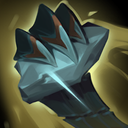

核心裝備
 日炎聖盾
日炎聖盾 寒冰霸拳
寒冰霸拳 荊棘之甲
荊棘之甲 自然之力
自然之力 好戰者鎧甲
好戰者鎧甲

以下為本站 7.2d 校正後的標準配置；實戰仍需依敵方陣容調整。


技能優先：Q > W > E
普攻與多個技能會累積顫抖，疊滿後對目標持續造成最大生命百分比魔法傷害。

拔起岩石強化普攻，第三次攻擊造成額外最大生命傷害；重施可把岩石投向遠處。
獲得依生命成長的護盾並震擊周圍敵人，造成傷害與緩速。
加速並穿越地形，抓住第一名英雄後拖行；撞上牆體可造成控制與傷害。
向前刺出蠍尾壓制命中的敵方英雄並拖行，適合把關鍵目標拉回己方。
3技抓取 → 撞牆 → 2技 → 1技強化普攻
三技穿牆抓住敵人並撞向地形，接護盾緩速與強化普攻持續輸出。
1技拔岩 → 強化普攻 → 投擲岩石 → 2技
先拔起岩石強化普攻，敵人拉開時重施投擲，再用二技緩速追上。
4技 → 3技 → 1技 → 2技
從側面用大絕壓制關鍵目標並往隊友方向拖行，結束後接三技再次控制。
一技強化普攻與投石是主要清野工具，二技護盾可降低損血。Gank 優先從牆體使用三技穿越地形，抓住敵人後撞牆，正面從河道走入通常較難成功。
7.2a 強化後，護盾、三技冷卻與一技最大生命傷害都更適合持續小規模戰。物件前先卡住側翼牆體，找三技或大絕拖回關鍵目標的角度。
依陣容選擇強開或保排。大絕能壓制多個目標，但蓄力與角度容易被看穿；有時先用三技撞牆再接大絕更穩定。
對局名單是本站依英雄機制與目前配置整理的參考，不等同固定勝率。
打野先維持標準刷野與節奏裝，只有敵方陣容或我方前排需求明顯時才調整。
觸發：敵方前排多，物件團與正面團戰會長時間卡在高生命目標上。
前排本身不需要硬轉全輸出，改用能隨目標生命造成持續傷害的防裝處理長戰。
觸發：敵方能在你進場或搶物件前快速把你秒掉。
蘭頓之兆提供高額物防並降低暴擊傷害。
觸發：進場或搶物件時經常被控制鏈直接中斷節奏。
改走水星之靴→鎖鏈軍靴，直接補韌性與魔防。
堅毅讓被控期間更耐打，適合前排承接第一波技能。
觸發：敵方前排、鬥士或吸血核心能在物件團長時間回復。
標準配置已經有重創，維持即可。
觸發：我方陣容沒有可靠第一承傷點，團戰需要有人更早進場吸收注意力。
你本來就是隊伍前排，維持標準坦裝並把資源用在正確抗性即可。
提醒：「缺前排」不代表所有打野都要改坦裝；刺客、法師與射手打野硬轉坦通常會失去英雄價值。
7.2a 打野正式版：技能名稱與核心機制依 Riot Games 台灣《激鬥峽谷》史加納英雄頁校正，並納入 7.2a 對一技最大生命傷害、二技護盾與冷卻、三技冷卻的強化。出裝、符文、技能順序、對局與前中後期節奏以目前 7.2a 打野版本基準整理。｜v55：完成打野第四批正式版，完整套用李星固定打野母版，補齊起手裝、核心三件、五件成裝、技能加點、三組連招、對局與實戰節奏。
本站於 2026-08-27 依 Patch 7.2d 重新檢查此配置。 Tier、出裝、符文與對局屬於 Wild Rift Guide 的整理與分析，不是 Riot Games 官方推薦；版本改動後會再依官方公告與實戰資料校正。